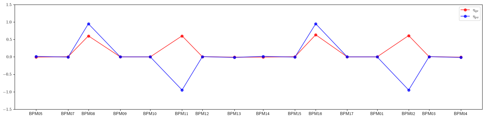
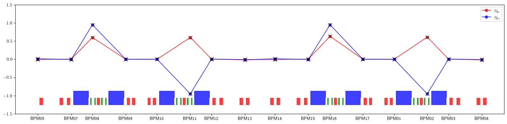
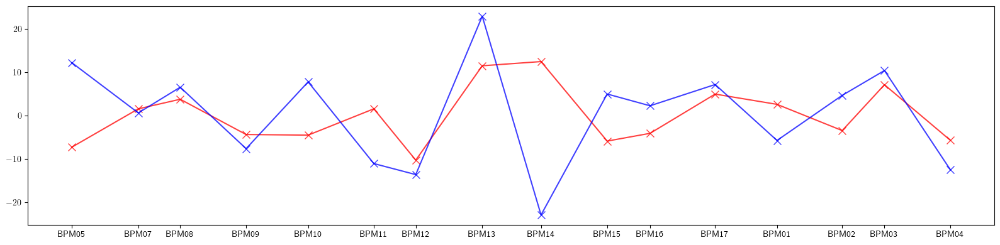
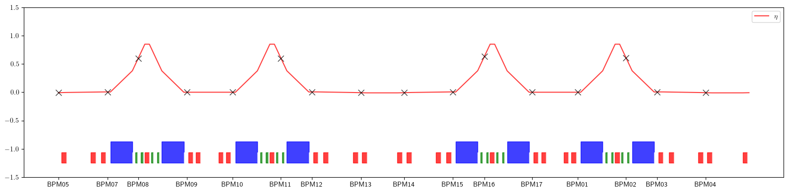

Example-31: Orbit (dispersion)
[1]:
# In this example 1st and 2nd order derivatives of closed orbit with respect to momentum deviation are computed
# First, dispersion at BPMs is computed from linear fit and compared with ELEGANT
# Next, 1st and 2ns derivatives of closed orbit are computed
[2]:
# Import
from pprint import pprint
import torch
from pathlib import Path
import matplotlib
from matplotlib import pyplot as plt
from matplotlib.patches import Rectangle
matplotlib.rcParams['text.usetex'] = True
from twiss import twiss
from model.library.line import Line
from model.command.util import select
from model.command.util import chop
from model.command.util import evaluate
from model.command.util import series
from model.command.external import load_sdds
from model.command.external import load_lattice
from model.command.build import build
from model.command.layout import Layout
from model.command.orbit import orbit
from model.command.orbit import parametric_orbit
[3]:
# Load ELEGANT twiss
path = Path('ic.twiss')
parameters, columns = load_sdds(path)
# Set tunes
nu_qx:float = parameters['nux'] % 1
nu_qy:float = parameters['nuy'] % 1
# Set dispersion at monitors
kinds = select(columns, 'ElementType', keep=False)
eta_qx = select(columns, 'etax' , keep=False)
eta_px = select(columns, 'etaxp', keep=False)
eta_qy = select(columns, 'etay' , keep=False)
eta_py = select(columns, 'etayp', keep=False)
eta_qx = {key: value for (key, value), kind in zip(eta_qx.items(), kinds.values()) if kind == 'MONI'}
eta_px = {key: value for (key, value), kind in zip(eta_px.items(), kinds.values()) if kind == 'MONI'}
eta_qy = {key: value for (key, value), kind in zip(eta_qy.items(), kinds.values()) if kind == 'MONI'}
eta_py = {key: value for (key, value), kind in zip(eta_py.items(), kinds.values()) if kind == 'MONI'}
positions = select(columns, 's', keep=False).items()
positions = [value for (key, value), kind in zip(positions, kinds.values()) if kind == 'MONI']
# Plot dispersion at monitors
plt.figure(figsize=(16, 4))
plt.plot(positions, eta_qx.values(), color='red', alpha=0.75, marker='o', label=r'$\eta_{qx}$')
plt.plot(positions, eta_px.values(), color='blue', alpha=0.75, marker='o', label=r'$\eta_{px}$')
plt.xticks(ticks=positions, labels=eta_qx.keys())
plt.legend()
plt.ylim(-1.50, 1.50)
plt.tight_layout()
plt.show()

[4]:
# Build and setup lattice
path = Path('ic.lte')
data = load_lattice(path)
ring:Line = build('RING', 'ELEGANT', data)
ring.propagate = True
ring.flatten()
ring.merge()
ring.split((None, ['BPM'], None, None))
ring.roll(1)
ring.splice()
[5]:
# Generate data for layout plot
layout = Layout(ring)
rectangles = layout.profile_1d(scale=0.75, shift=-1.25, text=False, exclude=['BPM'])
[6]:
# Compare linear tunes
state = torch.tensor(4*[0.0], dtype=torch.float64)
matrix = torch.func.jacrev(ring)(state)
(nuqx, nuqy), *_ = twiss(matrix)
print(nu_qx - nuqx)
print(nu_qy - nuqy)
tensor(3.1086e-15, dtype=torch.float64)
tensor(5.5511e-16, dtype=torch.float64)
[7]:
# First, we use orbit funtion to compute dispersion from linear fit
dps = torch.linspace(-1.0E-6, 1.0E-6, 5, dtype=torch.float64)
def fn(dp):
guess = torch.tensor(4*[0.0], dtype=torch.float64)
table, *_ = orbit(ring,
guess,
[dp],
('dp', None, None, None),
alignment=False,
advance=True,
full=False,
limit=16,
epsilon=None)
return table
data = torch.func.vmap(fn)(dps).swapaxes(0, 1)
print(data.shape)
print()
solution = torch.linalg.lstsq(dps.unsqueeze(1).expand(16, -1, -1), data).solution.squeeze()
etaqx, etapx, etaqy, etapy = solution.T
print(solution)
print()
torch.Size([16, 5, 4])
tensor([[-8.0639e-03, 1.5204e-02, -1.6705e-47, -1.0023e-46],
[ 5.4760e-03, -6.2632e-03, -1.1567e-46, -2.1361e-46],
[ 6.0119e-01, 9.4899e-01, -1.2796e-46, 1.6479e-46],
[ 2.1306e-04, 3.5665e-04, -1.7803e-48, 1.0495e-46],
[ 1.9312e-04, -3.4532e-04, 1.3538e-46, 2.0140e-46],
[ 6.0213e-01, -9.4895e-01, 2.2986e-47, -7.7907e-47],
[ 5.5166e-03, 6.3179e-03, -5.1114e-47, -2.4426e-47],
[-8.2339e-03, -1.5569e-02, -1.8418e-46, 2.8539e-46],
[-8.0136e-03, 1.5570e-02, -6.4499e-47, -3.5286e-47],
[ 5.4415e-03, -6.2309e-03, 7.7971e-47, 1.9323e-46],
[ 6.3304e-01, 9.4904e-01, 1.1570e-46, -1.0752e-46],
[ 1.4893e-04, 2.5326e-04, 5.7455e-47, -1.7626e-46],
[ 1.4627e-04, -2.5477e-04, -1.1789e-46, -2.1735e-46],
[ 6.1073e-01, -9.4905e-01, -7.4501e-47, -4.1134e-48],
[ 5.4673e-03, 6.2236e-03, -5.9414e-48, 1.1262e-46],
[-8.1900e-03, -1.5703e-02, 1.4993e-46, -1.9653e-46]],
dtype=torch.float64)
[8]:
# Compare fitted values with ELEGANT
print(etaqx - torch.tensor([*eta_qx.values()], dtype=torch.float64))
print()
print(etapx - torch.tensor([*eta_px.values()], dtype=torch.float64))
print()
tensor([ 2.2442e-10, -2.2744e-10, 6.9459e-11, 7.6277e-11, -1.3798e-10,
-5.3663e-11, 1.4376e-10, -1.7885e-10, -1.6939e-10, 1.5748e-10,
-6.4322e-11, 5.5576e-13, 1.0362e-10, -3.3488e-11, -1.3350e-10,
2.5610e-10], dtype=torch.float64)
tensor([-4.5285e-10, 3.1612e-10, 2.4220e-10, 1.5288e-11, 1.1806e-10,
1.3037e-10, 1.9701e-10, -3.3796e-10, 3.3938e-10, -2.2205e-10,
-1.9500e-10, 5.4374e-11, -1.2243e-10, -8.7487e-12, -1.3556e-10,
4.6687e-10], dtype=torch.float64)
[9]:
# Plot dispersion
plt.figure(figsize=(16, 4))
plt.plot(positions, eta_qx.values(), color='red', alpha=0.75, marker='o', label=r'$\eta_{q_x}$')
plt.plot(positions, eta_px.values(), color='blue', alpha=0.75, marker='o', label=r'$\eta_{p_x}$')
plt.errorbar(ring.locations().cpu().numpy(), etaqx.cpu().numpy(), fmt=' ', ms=8, color='black', alpha=0.75, marker='x')
plt.errorbar(ring.locations().cpu().numpy(), etapx.cpu().numpy(), fmt=' ', ms=8, color='black', alpha=0.75, marker='x')
plt.xticks(ticks=positions, labels=eta_qx.keys())
plt.legend()
for rectangle in rectangles:
plt.gca().add_patch(Rectangle(**rectangle))
plt.ylim(-1.50, 1.50)
plt.tight_layout()
plt.show()

[10]:
# Compute parametric closed orbit (1st and 2nd derivatives of closed orbit with respect to momentum deviation)
# Note, all parameters after groups are shown with default values
fp = torch.tensor(4*[0.0], dtype=torch.float64)
dp = torch.tensor(1*[0.0], dtype=torch.float64)
def solve(matrix, vector):
return torch.linalg.lstsq(matrix, vector.unsqueeze(1)).solution.squeeze()
orbits, table, orders = parametric_orbit(ring, # -- input line
fp, # -- dynamical closed orbit (at given starting location)
[dp], # -- list of deviation variables
(1 + 1, 'dp', None, None, None), # -- deviation variables group(s), (order, key, kinds, names and names to exclude)
start=None, # -- new lattice start
alignment=False, # -- flag to use alignment
advance=True, # -- flag to propagate orbit (orbits for at the end of all first level elements/lines are returned)
full=False, # -- full propagation flag (compute and return orbit at the last element/line, should match the first element of the output)
power=1, # -- fixed point power/order
solve=solve, # -- linear system solver (A x = b)
jacobian=torch.func.jacrev) # -- jacobian
[11]:
# Deviation groups specification is similar to command.wrapper.group or command.orbit.orbit, with first element being the derivative order
# Here, only one group (1 + 1, 'dp', None, None, None) is used
# 1 + 1 -- derivative order with respect to dp
# 'dp' -- deviation paramter to bind in matched elements (see element.data())
# None -- list of element kinds to match (use None to match all or a list of kinds)
# None -- list of element names to match (use None to match all or a list of names)
# None -- list of element names to exclude (use None to exclude none or a list of names)
# Several groups can be passed
# In this case list of deviation variables is expected to match
# Table returns group info in command.wrapper.wrapper format
print(table)
# Tuple of derivative orders is also returned
# The computed derivative is partial with respect to deviation groups
# See Example-01 and Example-02 in https://i-a-morozov.github.io/ndmap/examples/ndmap.html for details
print(orders)
[(None, None, 'dp')]
(2,)
[12]:
# Each orbit in orbits is represented as a special Table
# This is a redundent multivariate series representation
# It can be evaluated using model.command.util.evaluate function (alias of ndmap.evaluate.evaluate)
# model.command.util.chop can be used to clean small values (alias of ndmap.signature.chop)
local, *_ = orbits
chop(local)
pprint(local)
print()
# Evaluate table at non-zero deviation
# Note, here dynamical fixed point is required but has no effect
print(evaluate(local, [fp, dp + 1.0E-3]))
print()
# With only one deviation group the above is equivalent to
(x, dxdp, dxdpdp), *_ = local
print(x + dxdp @ (dp + 1.0E-3) + 0.5 * dxdpdp @ (dp + 1.0E-3) @ (dp + 1.0E-3))
print()
[[tensor([0., 0., 0., 0.], dtype=torch.float64),
tensor([[-0.0081],
[ 0.0152],
[ 0.0000],
[ 0.0000]], dtype=torch.float64),
tensor([[[-14.6125]],
[[ 24.3816]],
[[ 0.0000]],
[[ 0.0000]]], dtype=torch.float64)]]
tensor([-1.5370e-05, 2.7395e-05, 0.0000e+00, 0.0000e+00],
dtype=torch.float64)
tensor([-1.5370e-05, 2.7395e-05, 0.0000e+00, 0.0000e+00],
dtype=torch.float64)
[13]:
# Derivative table representation can be also converted to series using model.command.util.series function (alias of ndmap.series.series)
local, *_ = orbits
pprint(series((4, 1), (0, 1 + 1), local))
print()
# model.command.util.evaluate can also be used with series
print(evaluate(local, [fp, dp + 1.0E-3]))
print()
print(evaluate(series((4, 1), (0, 1 + 1), local), [fp, dp + 1.0E-3]))
print()
{(0, 0, 0, 0, 0): tensor([0., 0., 0., 0.], dtype=torch.float64),
(0, 0, 0, 0, 1): tensor([-0.0081, 0.0152, 0.0000, 0.0000], dtype=torch.float64),
(0, 0, 0, 0, 2): tensor([-7.3062, 12.1908, 0.0000, 0.0000], dtype=torch.float64)}
tensor([-1.5370e-05, 2.7395e-05, 0.0000e+00, 0.0000e+00],
dtype=torch.float64)
tensor([-1.5370e-05, 2.7395e-05, 0.0000e+00, 0.0000e+00],
dtype=torch.float64)
[14]:
# Extract 1st and 2nd order dispersion values from series representation
eta1_qx = torch.stack([series((4, 1), (0, 2), local)[(0, 0, 0, 0, 1)][0] for local in orbits])
eta1_px = torch.stack([series((4, 1), (0, 2), local)[(0, 0, 0, 0, 1)][1] for local in orbits])
eta2_qx = torch.stack([series((4, 1), (0, 2), local)[(0, 0, 0, 0, 2)][0] for local in orbits])
eta2_px = torch.stack([series((4, 1), (0, 2), local)[(0, 0, 0, 0, 2)][1] for local in orbits])
[15]:
# Compare with ELEGANT
print(eta1_qx - torch.tensor([*eta_qx.values()], dtype=torch.float64))
print()
print(eta1_px - torch.tensor([*eta_px.values()], dtype=torch.float64))
print()
tensor([ 1.0004e-14, -1.3037e-14, 5.9952e-15, 1.2807e-15, -9.5464e-15,
1.3323e-15, 9.5436e-15, -1.4350e-14, -1.3914e-14, 9.5748e-15,
8.8818e-16, -8.9525e-15, 5.2589e-16, 6.7724e-15, -1.3343e-14,
9.5809e-15], dtype=torch.float64)
tensor([-2.1778e-14, 1.9190e-14, 1.4433e-14, -3.7748e-15, 1.0540e-14,
3.9968e-15, 1.0880e-14, -2.7096e-14, 2.7100e-14, -1.1074e-14,
-4.1078e-15, -1.0103e-14, 4.2984e-15, -1.5210e-14, -2.0095e-14,
2.1663e-14], dtype=torch.float64)
[16]:
# Plot dispersion
plt.figure(figsize=(16, 4))
plt.plot(positions, eta_qx.values(), color='red', alpha=0.75, marker='o', label=r'$\eta_{q_x}$')
plt.plot(positions, eta_px.values(), color='blue', alpha=0.75, marker='o', label=r'$\eta_{p_x}$')
plt.errorbar(ring.locations().cpu().numpy(), eta1_qx.cpu().numpy(), fmt=' ', ms=8, color='black', alpha=0.75, marker='x')
plt.errorbar(ring.locations().cpu().numpy(), eta1_px.cpu().numpy(), fmt=' ', ms=8, color='black', alpha=0.75, marker='x')
plt.xticks(ticks=positions, labels=eta_qx.keys())
plt.legend()
for rectangle in rectangles:
plt.gca().add_patch(Rectangle(**rectangle))
plt.ylim(-1.50, 1.50)
plt.tight_layout()
plt.show()

[17]:
# Plot second order dispersion
plt.figure(figsize=(16, 4))
plt.errorbar(ring.locations().cpu().numpy(), eta2_qx.cpu().numpy(), fmt='-', ms=8, color='red', alpha=0.75, marker='x')
plt.errorbar(ring.locations().cpu().numpy(), eta2_px.cpu().numpy(), fmt='-', ms=8, color='blue', alpha=0.75, marker='x')
plt.xticks(ticks=positions, labels=eta_qx.keys())
plt.tight_layout()
plt.show()

[18]:
# Compute dispersion at the exit of each element
ring.flatten()
fp = torch.tensor(4*[0.0], dtype=torch.float64)
dp = torch.tensor(1*[0.0], dtype=torch.float64)
orbits, *_ = parametric_orbit(ring, fp, [dp], (1, 'dp', None, None, None), advance=True, full=True)
dispersion = torch.stack([series((4, 1), (0, 2), local)[(0, 0, 0, 0, 1)][0] for local in orbits])
plt.figure(figsize=(16, 4))
plt.errorbar(ring.locations('all').cpu().numpy(), dispersion.cpu().numpy(), fmt='-', color='red', alpha=0.75, label=r'$\eta$')
plt.errorbar(positions, eta_qx.values(), fmt=' ', ms=8, color='black', alpha=0.75, marker='x')
plt.xticks(ticks=positions, labels=eta_qx.keys())
plt.legend()
for rectangle in rectangles:
plt.gca().add_patch(Rectangle(**rectangle))
plt.ylim(-1.50, 1.50)
plt.tight_layout()
plt.show()
